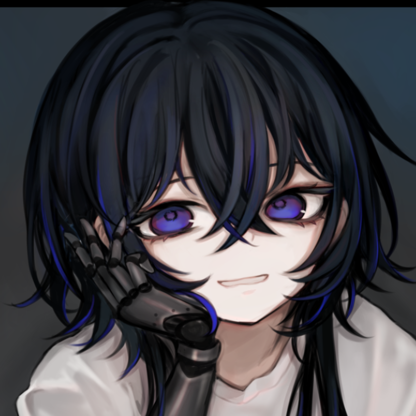

沢宮いうら
After Effectsを軸に、心に残るモーショングラフィックスと映像編集を提供します。
『歌ってみた』MV、MAD、ボイスコミックなど、ジャンルを問わず幅広い制作に対応。
最新の制作実績やメイキングはXで随時更新しています。
ご依頼・ご相談は、下のアイコンからお気軽にご連絡ください。
幅広いジャンルに対応
MV制作以外にも、企業案件として下記ジャンルの制作経験がございます。
アニメ切り抜き
アニメ配信切り抜き
ボイスコミック
MAD
商品紹介
制作実績
これまでに制作を担当した作品の一部です。カテゴリや年で絞り込んでご覧いただけます。